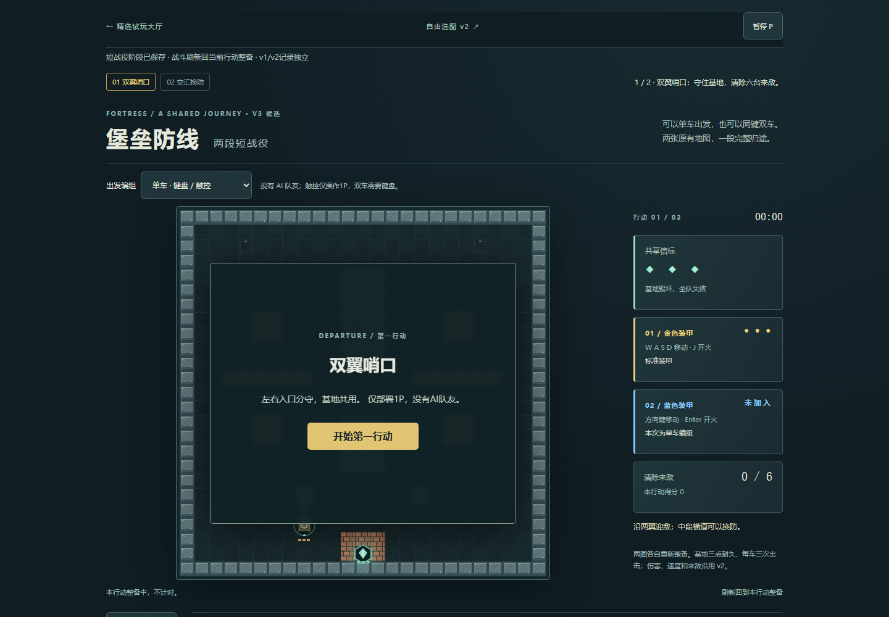
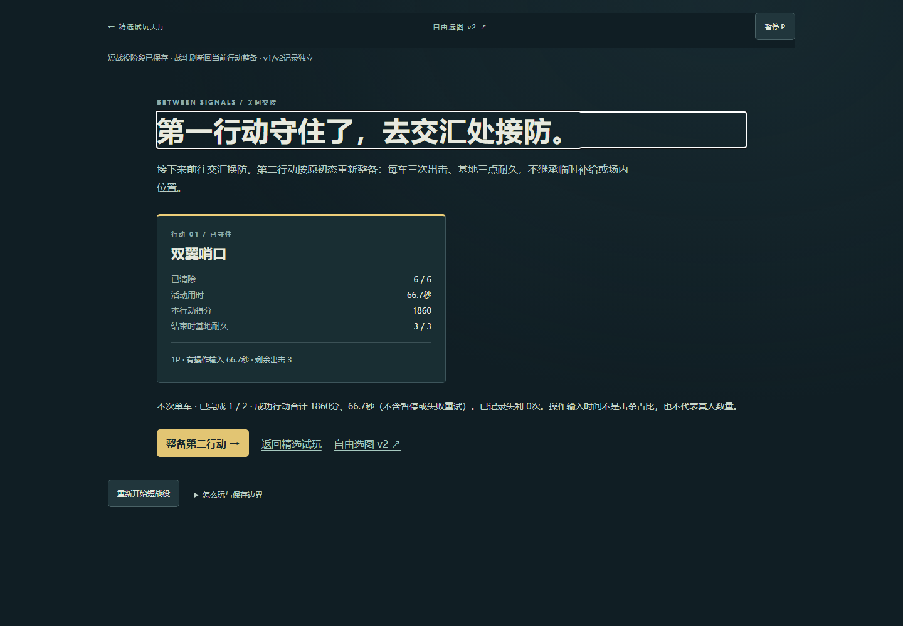
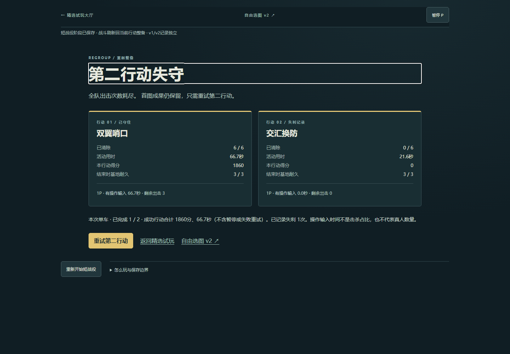
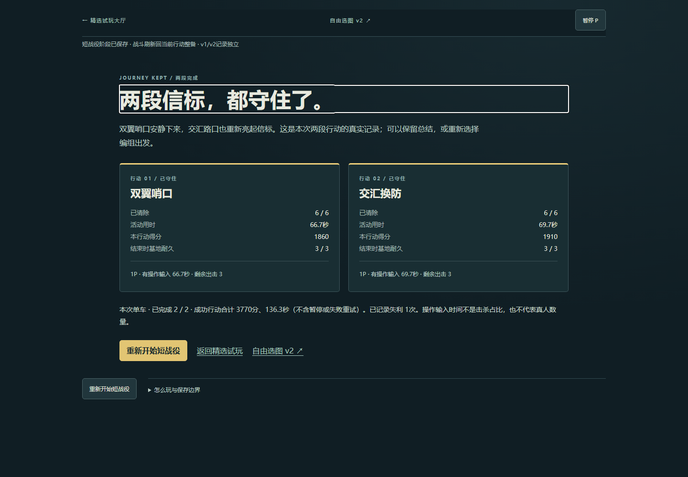
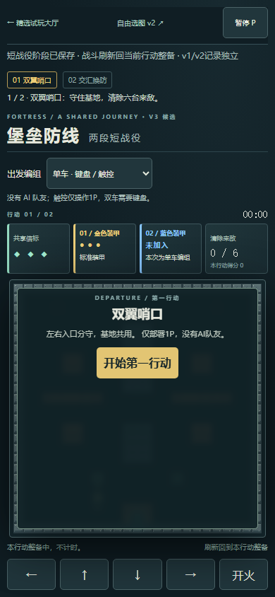
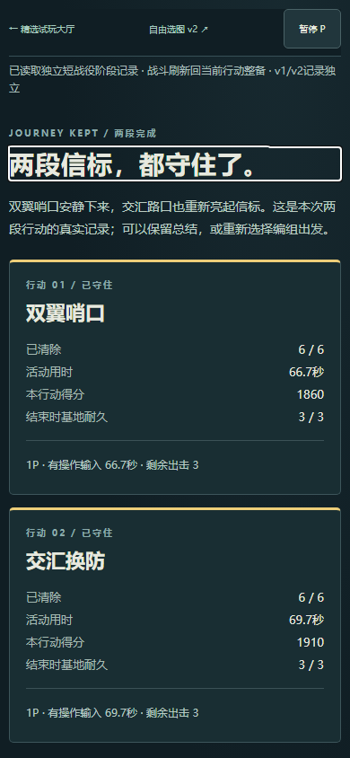
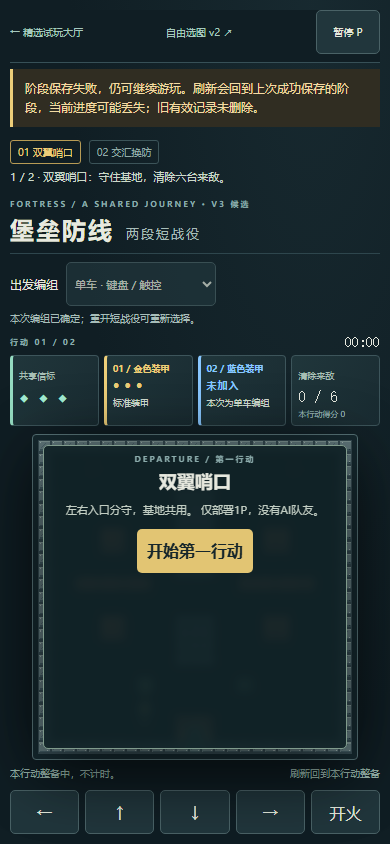

堡垒v3是独立可选的两图短战役：双翼哨口守住后，整备接防交汇换防，再留下两段真实总结。原v2自由选图继续保留，目录仍为40项。
这是经典启发的原创体验，复用原两图及引擎，不是完整《Battle City》复刻。以下为Windows桌面Chromium 147自动化证据；单人胜利使用强策略辅助输入。双人仅验证短时独立控制，触控仅浏览器仿真，不能替代真人合作、真机性能、手感或审美验收。不保证五分钟通关。
出发前选单车或同键双车，两图保持同一编组。第一行动胜利后先看结果，再明确开始第二行动。每图按原初态整备，基地3点耐久、每车3次出击，不继承场内位置和临时补给。失利重试当前图，首图成果保留；末图完成后没有第三图，最终总结可刷新重读。没有额外奖励或成长经济。
新记录键为 classic-atlas.fortress.campaign.v3（schema 1），不读写v1/v2记录。只保存编组、阶段和已结束结果；战斗刷新回当前图整备。坏档保全原字节，只允许临时游玩；写失败提示刷新风险，后续成功写入清除失败提示。重新开始需要确认，只重开这份战役。
| 流程 | 真实观察 | 证据性质 |
|---|---|---|
| 首图清六敌→关间 | 66.6833秒、1860分、基地3；关间刷新保留原结果 | 普通键盘UI；只读快照策略每约100ms决定WASD/J |
| 第二图自然失利→刷新→重试 | 刻意不输入，21.6秒出击耗尽；首图保留，失败次数1，只重试第二图 | 自然引擎失利，未注入胜负或时间 |
| 第二图胜利→最终总结 | 69.6667秒、1910分、基地3；成功合计3770分 / 136.35活动秒，不含暂停或失败尝试 | 普通UI策略辅助；不是两人协作或手工无辅助成绩 |
| 结束刷新、取消/确认重开、返回 | 刷新保留两结果；取消不改状态；确认回首图空成绩。原v2字节不变，返回精选恢复入口焦点和“溪谷”筛选 | 真实完成会话，桌面与390CSS。尾部截图脚本API错误后复用同一真实完成会话续验，未注入完成档 |
| 双人、触控、故障 | 两车各自移动/开火；原生touch多指部分释放/取消、暂停恢复及返回；配额失败恢复/坏档保护 | 双人短输入由同一执行者操作，非真人合作；touch非真机；存储异常为独立故障fixture |
本地完整链无页面异常、资源HTTP错误或未解释请求失败。第一次尾部测试调用了错误的Playwright视口API，修正测试后继续真实会话；该工具错误没有当作游戏缺陷。原引擎、地图、渲染、共享输入模块和v2整目录未改。线上提交、构建和普通操作的最终核验另由发布交付记录确认，不把本地截图标成线上截图。







普通UI真实阶段、结果与执行恢复说明 · 双人/原生触控及隔离存储故障 · 10组模型/存储检查 · 复验命令与限制。
10组包括合法引擎两胜一败、阶段去重/当前图重试、活动刷新、旧键隔离、坏档/未知格式保护、配额恢复、读拒绝，以及明确标注的双人结果形状fixture。模型和fixture不计作普通UI通关。原地图、伤害、速度、敌人和补给规则保持不变。
尚需真人确认：单车持续操作与读图体验、两人共用键盘的配合与键位冲突、真实手机多指/滚动/性能、整体美感和耐玩性。本轮没有增加声音，不能把画面与技术测试当作声音验收。达到有限短战役里程碑，不扩第三图或新成长系统。